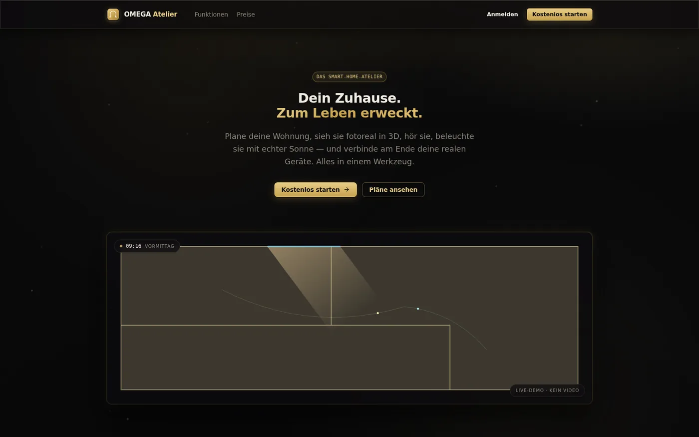

Live · ohne AnmeldungOMEGA Atelier
Ein komplettes Smart-Home-Planungsstudio, das im Browser läuft — zeichnen, begehen, ausstatten, exportieren.
Aufgabe
Wer ein Smart Home plant, arbeitet heute in drei getrennten Werkzeugen: ein Grundriss entsteht im CAD, die Geräteauswahl in Tabellen, die Vorstellung vom Ergebnis im Kopf. Zwischen diesen Schritten geht das verloren, worauf es ankommt — ob der Bewegungsmelder im Flur die Treppe wirklich erfasst und ob das Licht im Wohnzimmer abends so aussieht, wie man es sich vorgestellt hat.
Das Atelier führt die drei Schritte zusammen: Grundriss zeichnen, Räume in Echtzeit-3D begehen, Geräte platzieren — im selben Dokument, ohne Export dazwischen und ohne Installation.
Was drin steckt
- Grundriss-Editor — Wände, Türen und Fenster mit Maßführung; der Plan ist die Datenquelle, nicht ein Bild davon.
- Echtzeit-3D — derselbe Grundriss, begehbar. Kein Rendern im Hintergrund, kein Warten auf ein Ergebnis.
- Über 30 Ökosysteme — Geräte aus den verbreiteten Smart-Home-Welten, platzierbar an der Stelle, an der sie später hängen.
- PBR-Materialien — Oberflächen mit physikalisch begründeten Kennwerten statt eingefärbter Flächen.
- Möblierung — Einrichtung als Maßstab: ein Raum ohne Möbel lässt sich nicht beurteilen.
- 3D-Export-Studio — die Planung verlässt das Werkzeug wieder, statt darin gefangen zu bleiben.
Kanten
Zwei Darstellungen, ein Zustand. Grundriss und 3D-Ansicht zeigen dasselbe Modell aus zwei Richtungen. Sobald beide ihre eigene Kopie halten, driften sie auseinander — und der Fehler fällt erst auf, wenn jemand einen gelöschten Raum noch in 3D stehen sieht. Deshalb liegt der Zustand einmal in einem Zustand-Store, und beide Ansichten sind reine Leser darauf.
Echtzeit heißt Budget. Eine 3D-Szene im Browser hat pro Bild etwa sechzehn Millisekunden. Das ist keine Zielgröße, sondern eine Obergrenze: was nicht hineinpasst, muss weg — nicht schöner gerechnet werden.